Small fish, big paddies. Find the missing fish, with your fins or your friendship.
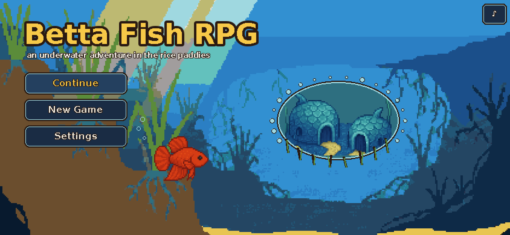
You're a young betta from Paddy Village, and fish keep vanishing from the outer paddies. Swim freely across a sunlit, terraced rice-paddy world, battle or befriend the fish that get in your way, and gear up from helmet to full metal. Follow a trail of strange scales up to the city on the next terrace, then down into the Sunken Ditch, where something very old and very lonely is waiting. Every fight can become a friendship, and the village remembers what you did.
The feeling: cozy and a bit brave. A bright paddy you want to explore, a shiver of mystery in the darker water, and a warm, silly heart: party hats and Happy Balloon Time.
The original game (built in 2025) has a lovely cast of pixel-art fish and a mystery that's set up but never solved: Elder Finn says fish are disappearing, Bubble keeps asking to come along, and there's talk of "the big city on the next terrace." This remake takes it as a sketch and builds what it was reaching for, keeping every piece of its art and its names.
Swim through the reeds and spot a fish, its level showing over it. Dodge it, fight it, or try to make friends. Grab a glinting Betta Bite on the way.
A turn-based battle: Attack, a spell, Party!, an item, or Swim Away. Bubble acts after you. Win EXP and Betta Bites, or a new friend in a party hat.
Finish an area's errand, open the next terrace, level into new armor and spells, come home to villagers who talk about what you did, buy the submarine, face the Gar.
The choice the game lives or dies by: fight or befriend. Both have to feel good. A new friend gives the same EXP and Betta Bites as a win, and the party cheers you up: your magic comes back and you heal a little. A battle simulator checks that befriending is never the worse choice.
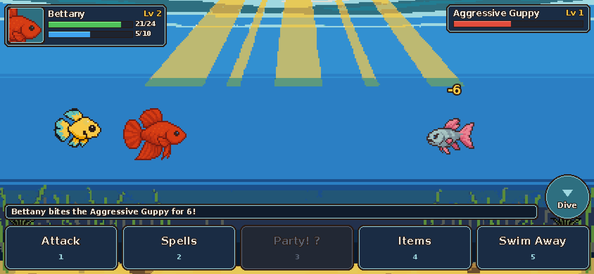
The further from the village, the darker the water and the tougher the fish (the original's rule), with fixed levels per area so there are no surprise spikes near home.
| Area | What happens there | Who lives there |
|---|---|---|
| Paddy Village | Elder Finn sends you out. Shop, inn, five villagers who react to your adventure. | Friends only |
| The Shallows | First swims and battles. At the Old Stump, Bubble catches up and teaches Happy Balloon Time: your first friend. | Guppies (L1–2), Angelfish (L2) |
| Reedwater | Tall reeds hide fish until you're close. A trail of five huge, strange scales leads uphill. Helmet at L3, Gravel Grenade at L4. | Angelfish, Sneaky Catfish, the new Dragonfly Nymph (L3–5) |
| Highwater, the city on the next terrace | Up a wide spillway: a bigger shop, an inn, townsfolk with rumors of a long shadow, and the Lock-Keeper's errand. | Cichlids (L5) in the spillway's side pools |
| The Murk | Dark water lit by a glow-moss lantern; three lost cogs for the drain gate; optional edge zones with Level-10 fish. Full Metal and bigger balloons at L7. | Cichlids and the new Snapping Crayfish (L6 near, L7–8 deep), edge fish (L10) |
| The Sunken Ditch | A spring to rest at, the missing fish in a reed cage, and the Gargantuan Gar. | The Gar |
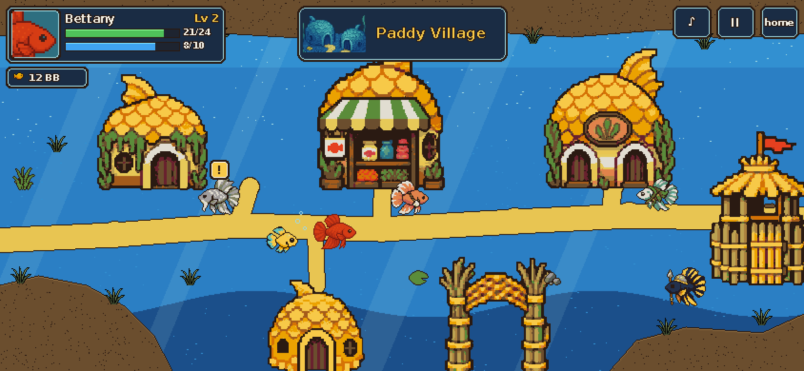
The Gar is the last fish of the old river, older than the terraces. When the paddies were built it was shut into the drainage pool beneath them, alone, for a hundred years. Last spring's flood burst the pool's old outflow pipe and shook the drain gate's three cogs loose into the Murk. Since then the Gar slips up the pipe at night, "when the rice stalks sway," and carries fish home to its pool. It doesn't eat them. It wants company.
"It doesn't eat us. It brings us here and just... watches us. It hums at night. I think it's lonely." (Mossy, in the reed cage)
That's why a party of friends can reach it, and why winning by fins is a little sad. You learn the story in pieces: a scale as big as Bubble's head, Highwater rumors, the Lock-Keeper, a long shadow sliding into the pipe in the Murk, and Mossy.
Bring the Gar down. The fish swim home to a hero's welcome. Elder Finn: "A hundred years shut under our paddies, alone. No wonder it wanted company."
With at least five friends, Party! brings them all bursting in, and four balloons of party win the Gar over. The Lock-Keeper fits the pipe with a door the Gar can open, so it visits. Party hats for everyone, the Gar included.
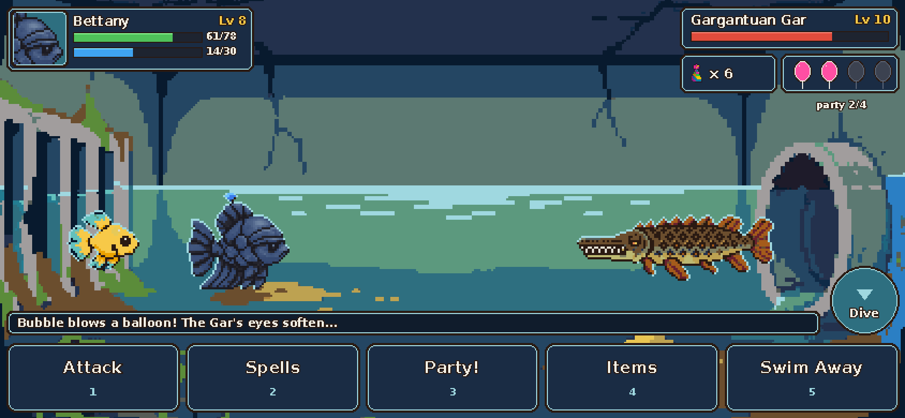
| Who | Looks like | Does |
|---|---|---|
| You | The original betta, in the color you pick, from bare fins to full metal (with a crest plume in your color) | The hero |
| Bubble the Brave | Small, round, lemon-yellow, turquoise fin tips, big eyes | Your companion: nips, heals once a fight, sometimes takes a hit for you (and gets dizzy) |
| Elder Finn | Old grey-white betta, long ragged fins, a drooping whisker beard | Gives the quest and always knows where to go next |
| Shopkeeper Coral | Salmon-pink with cream fin edges and a shell necklace | Fish Mart; sells the submarine once you've reached Highwater |
| Guard Captain Reef | Black-and-gold, pebble helmet, reed spear | Keeps the east gate; won't let you out alone |
| Innkeeper Seaweed | White-and-mint marbled, kelp-leaf shawl | Rest for 5 Betta Bites (free if you're broke) |
| Lock-Keeper Whorl | Old snail, brass spectacles, a ring of keys on his shell | Gives the lantern and the drain-gate errand |
| Pip | Cheerful pink shrimp in a tiny apron | Highwater's shop |
| The Gargantuan Gar | Enormous, ancient, armored, a little sad-eyed; more than twice your length | The boss, or your biggest friend |
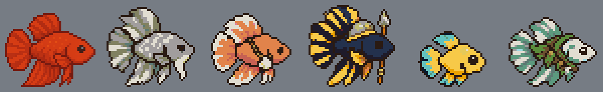
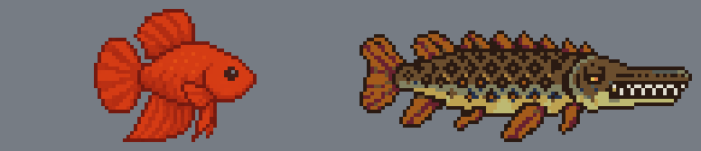
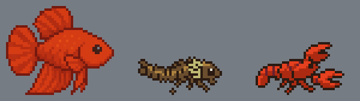
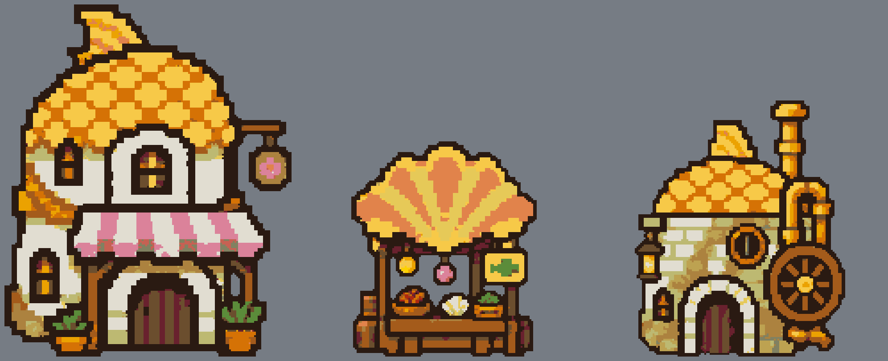
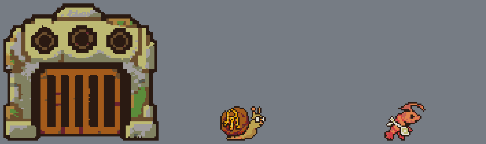
Chunky pixel art with bold dark outlines, flat bright colors and one shade step, exactly like the original sprites. One art pixel is one screen pixel at every size, so new art and old art sit together without smearing. The water and mud banks are drawn by the game itself (shimmer, light shafts, deeper water darker). Backdrops are underwater side views, calm in the middle where the fighters stand.
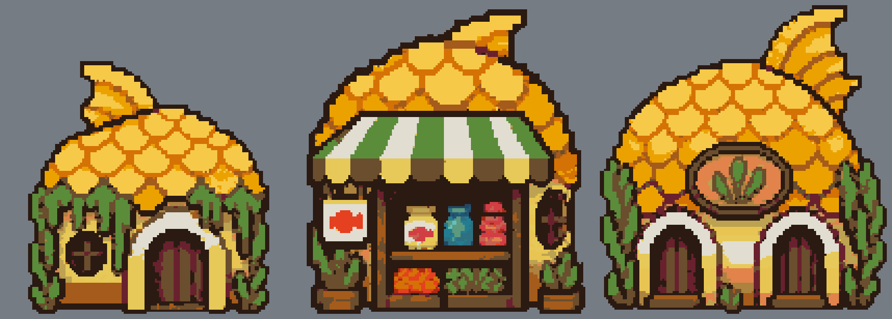
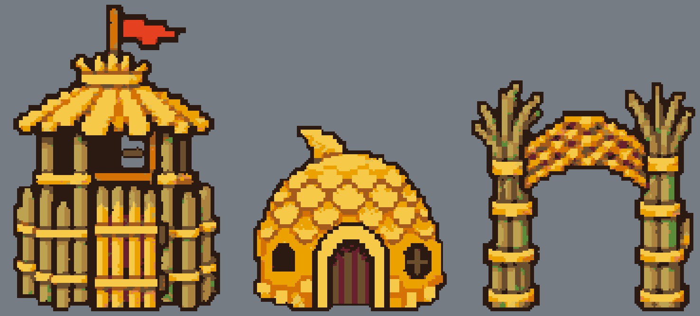
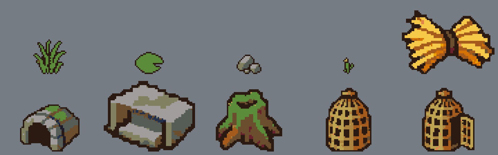
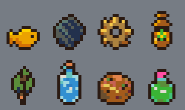
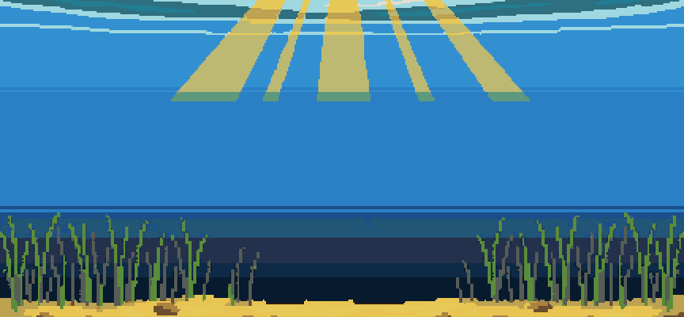
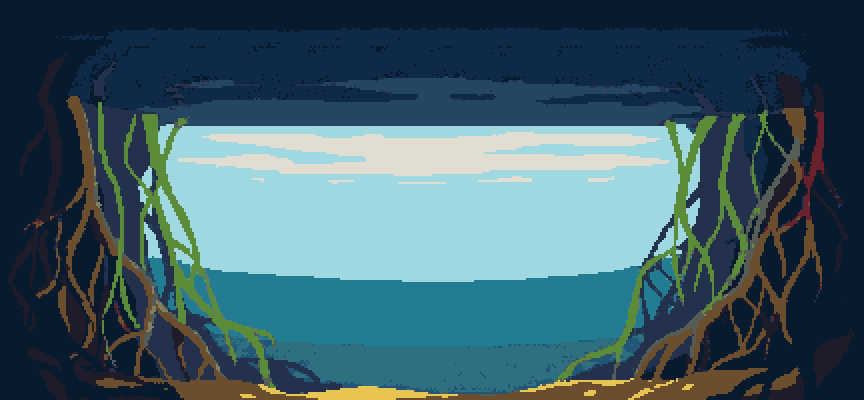
The hardest parts: balancing battles so both the fins path and the friendship path feel good (a battle simulator checks 23 targets); making new art that sits on the original sprites' pixel grid; and fitting exploration and battles onto a phone without covering the action.
Two review rounds (a player's view, a builder's view, and an art-and-sound view) shaped this design: 64 findings, all addressed. A few nice extras (a swimming animation, a Gar lunge) are saved for later.